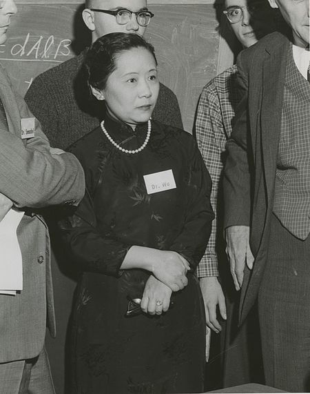

20세기 이후 위인

우젠슝 (ChienShiung Wu)
- 시대
- 20C~
- 출생 및
사망 - 출생 > 1912년 5월 3일
사망 > 1997년 2월 16일 - 업적 요약
- 베타(β)붕괴 연구, 뮤(μ)중간자원자의 X선 연구 등, 혈액 속의 헤모글로빈구조 연구에 업적을 남겼다.
- 업적 상세
- 엔리코 페르미가 1934년 베타 붕괴 이론을 발표했지만, 루이스 월터 앨버레즈의 실험에서 이론과 상충하는 결과가 나왔다.
우젠슝은 이 실험을 되풀이하는 것에 착수하여 그 결과를 증명해냈다.
그는 구리-64 베타선원으로 이용되었던 황산구리(II)의 두껍고 울퉁불퉁한 막이 문제라 보았고, 이것을 방사된 전자들이 힘을 잃게 하는 원인으로 짐작했다.
그는 이것을 극복하기 위해 분광계의 오래된 형태인 솔레노이드 분광계를 개조하였다.
황산 구리에 세제를 더해 얇고 평평한 막을 만들도록 하였다.
이를 통해 그는 불일치가 관측된 것이 실험 오차의 결과임을 논증할 수 있었다.
그녀의 실험 결과는 페르미의 이론과 일치했다.
리정다오와 이론물리학자 양전닝은 기존의 실험 결과들을 연구하여 반전성이 전자기 상호작용과 강한 상호작용에서 보존된다고 확신하게 되었다.
리정다오와 양전닝은 이론적 추측을 통해 코발트-60 원자의 베타 입자가 비대칭적으로 방사될 것으로 보아, "반전성 보존의 법칙" 가설이 타당하지 않을 것이라 예상했다.
이 예상은 적중했고, 우젠슝의 실험은 반전성이 약한 핵 상호작용 아래에서 보존되지 않음을 증명했다.
이 결과는 컬럼비아 대학교 동료들의 다른 실험들을 통해 곧 확증되었고, 얼마 지나지 않아 이 모든 결과들이 같은 물리학 학술지의 같은 호에 두 가지 다른 연구 논문으로 발표되었다.
이 결과들은 많은 연구소와 다른 방식의 실험을 통해 거듭 증명되었다.
반전성 위반의 발견은 표준 모형의 개발과 입자물리학에 지대한 공헌을 하였다.
리정다오와 양전닝은 그들의 이론적 연구 성과를 인정받아 1957년 노벨 물리학상을 받았다.